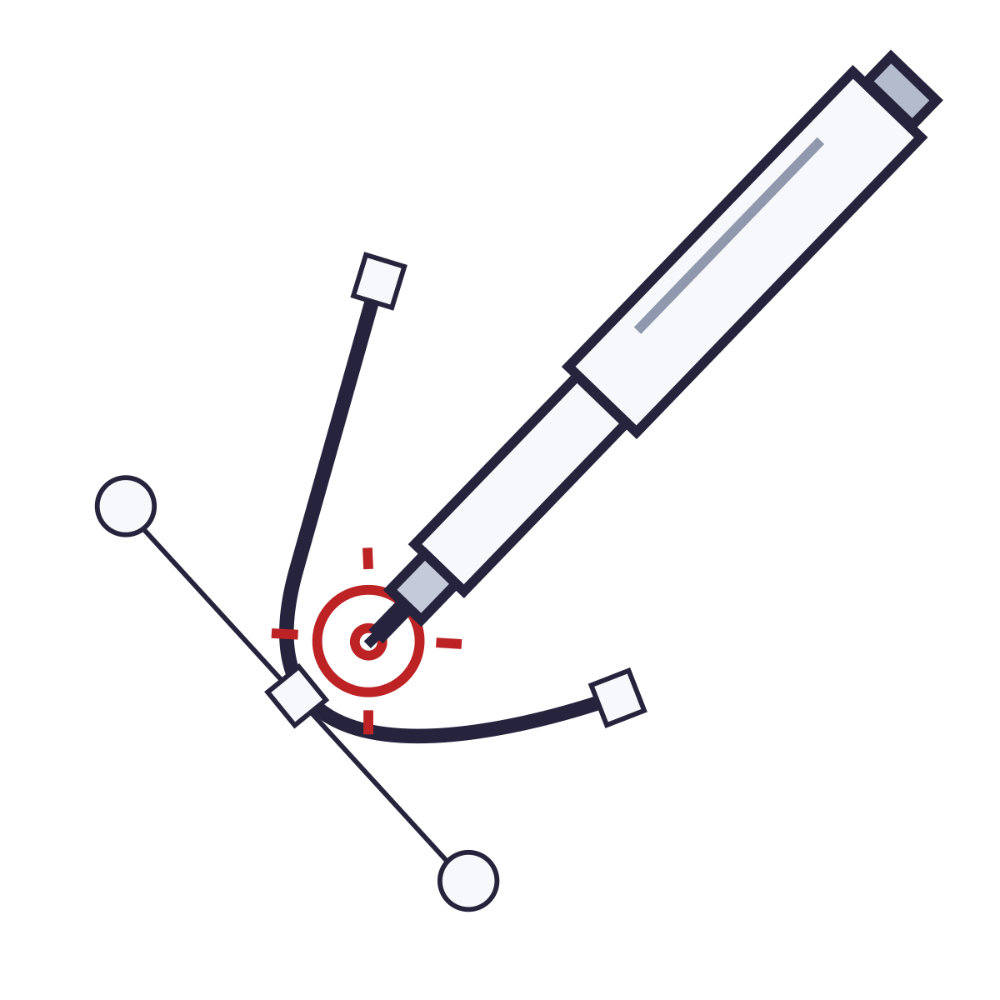

Trazados, formas, texto y capas en el navegador, sin instalar nada y sin subir el trabajo a ningún servidor. Los archivos salen en SVG, PNG, PDF y DXF.

Derechos reservados · Aplicación desarrollada por
crearcodex.com
Construida sobre SVG-Edit,
con iconos de Phosphor.
Dibuja directo en el navegador. Tu trabajo se guarda solamente en este equipo.